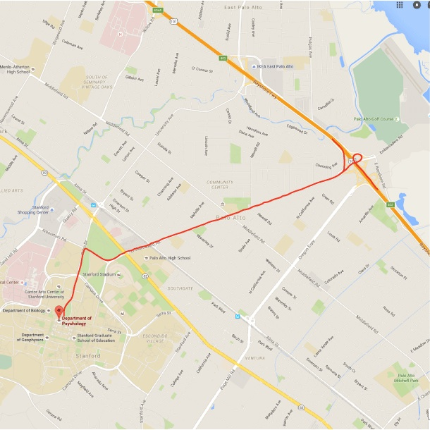
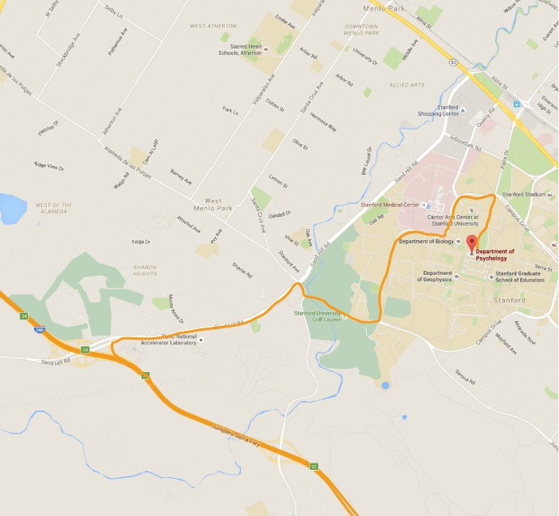
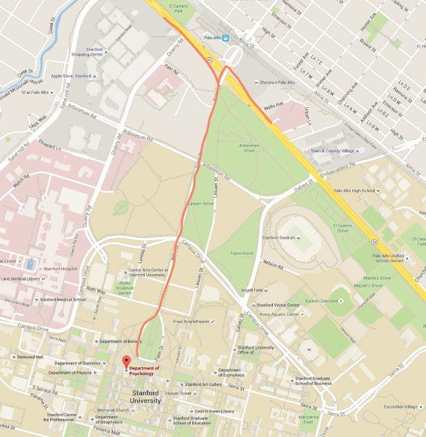
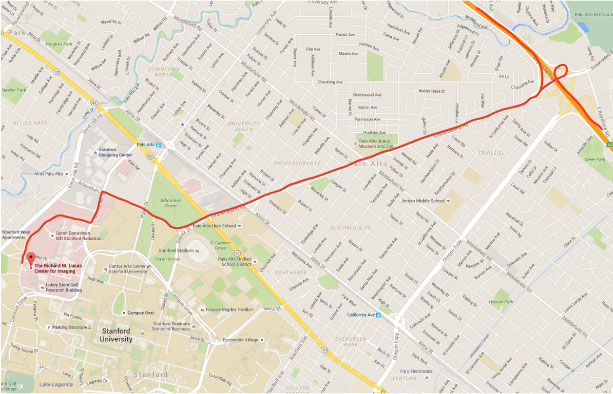
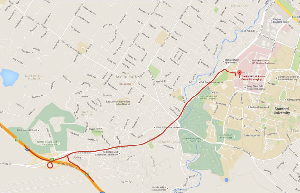

Directions
Click on a map to get directions from Google Maps.
Jordan Hall
The Stanford Mood and Anxiety Disorders Laboratory is located within the first floor of
the Department of Psychology at Stanford University.

From Highway 101 North or South:
- Take the Embarcadero Road exit west towards Stanford University.
- At El Camino Real, Embarcadero turns into Galvez Rd.
- Turn right onto Arboretum Road.
- Get into the left-hand lane and turn left onto Palm Drive.
- Before 4 pm, follow Palm Drive around the grassy Oval toward the front of the school.
- A researcher will be waiting at the Q permit parking spots with a permit pass.
- Park anywhere in the "A" lot after 4 pm or on the weekends.
- Jordan Hall is on your right as you face the main quad. Look for "Jordan Hall" in
marble on the outside of building.

From Highway 280 North or South:
- Exit Sand Hill Road east towards Stanford.
- Continue downhill and turn right on Santa Cruz Avenue.
- Make an immediate left onto Junipero Serra Boulevard.
- Turn left when you reach Campus Drive West. Continue around Campus Drive West until
you reach Palm Drive.
- Take a right onto Palm Drive
- Before 4 pm, follow Palm Drive around the grassy Oval toward the front of the school.
- A researcher will be waiting at the Q permit parking spots with a permit pass.
- Park anywhere in the "A" lot after 4 pm or on the weekends.
- Jordan Hall is on your right as you face the main quad. Look for "Jordan Hall" in
marble on the outside of building.

From El Camino Real:
- Exit El Camino Real at University Avenue
- Turn towards the hills (away from Palo Alto).
- Go over the overpass, University becomes Palm Drive.
- Before 4 pm, follow Palm Drive around the grassy Oval toward the front of the school.
- A researcher will be waiting at the Q permit parking spots with a permit pass.
- Park anywhere in the "A" lot after 4pm or on the weekends.
- Jordan Hall is on your right as you face the main quad. Look for "Jordan Hall" in
marble on the outside of building.
Lucas Center (fMRI)
1201 Welch Road
Stanford, CA 94305
Phone to scanning suite: (650) 723-8693
Due to the current construction at the Stanford Campus and the Lucas Center,
these are modified instructions for parking and entering the Lucas Center. We apologize
for the inconvenience and suggest that you give yourself ample time when driving to
the scanning appointment.

From 101 North or South:
- Take the Embarcadero exit towards Stanford.
- Continue straight on Embarcadero and cross El Camino Real.
- Embarcadero enters the Stanford Campus and is now named 'Galvez St.'
- Make the first right off Galvez onto Arboretum Rd.
- Turn left onto Quarry Road (this is the second big intersection).
- Turn right at the stoplight at Welch Road.

From 280 North or South:
- Exit Sand Hill Road (East toward Stanford).
- Follow Sand Hill Road for a few miles.
- Turn right at Pasteur Drive.
- Turn right at Welch Road.
From Welch Road:
- Follow Welch Road, cross Pasteur Drive (2 streets) and then pass through two
stop signs.
- When you get to a T-intersection, make a left onto Campus Drive.
- Make the first left into the parking lot and park close to the entrance (do not drive
down to the right, eastward, in the parking lot). Parking is free after 5 pm and on weekends.
- At the opposite side of the entrance to the parking lot, there is a pedestrian pathway
(Governor's Lane) located between a large, gray, metal building on your right (Center
for Clinical Sciences Research) and a smaller, beige stone structure on your left
(Mayer Cancer Biology).
- Walk down this pathway about 100 yards to the last (third) building on the left. This
is the MSLS/Lucas Center building and the entrance is a round glass atrium (there may
be paper signs on the door stating 'Radiology/Lucas Center'). If no one is waiting for
you at this entrance, please pick up the phone in the gray box to the right outside
the entrance and dial 3-8693 to let us know that you have arrived and someone will come
and meet you.